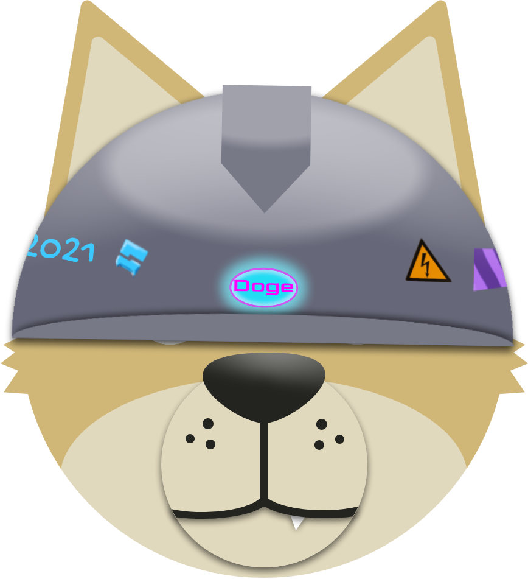
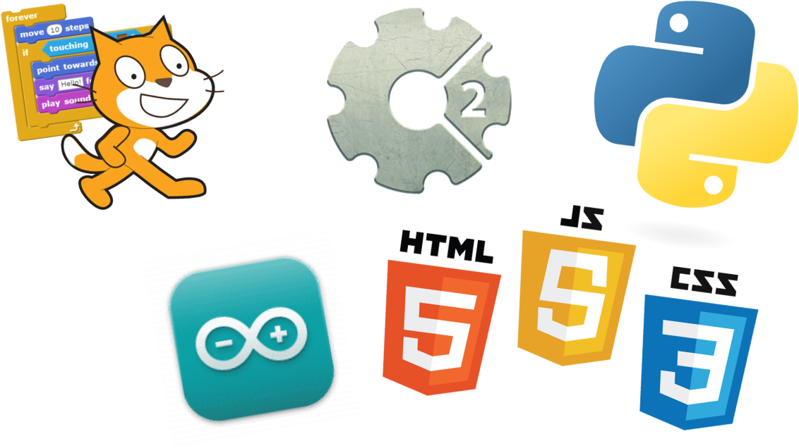

About me
Hi, I am Milosh, also known as DaDogeDev.
I am a small teenage programmer from Serbia.
My hobbies are programming, electronics and stargazing.
About DaDogeDev
You probably saw my mascot DaDogeDev.
His story is quite long, but if you wanna learn about him want to learn more about him click here
About my programming career
I started my programming career as a Roblox developer.
I always wanted to make games and let everyone play them!
When I found out about Roblox Studio, I started making games but they weren't anything special. They were just free models scattered around the map, some of them may contain some viruses but who knows.
In 2020, I started taking coding classes. The first language I started learning there is Scratch, then Construct 2, then Python, then Arduino! Currently, I'm learning Web Dev.
